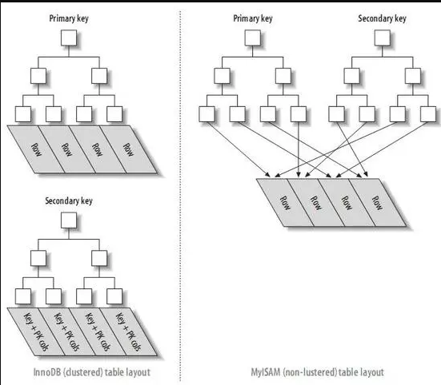

高性能mysql学习笔记-创建高性能的索引
索引是存储引擎用于快速找到记录的一种数据结构，对于良好的性能非常关键，尤其是当表中的数据量越来越大的时候。
创建高性能的索引
- 索引是存储引擎用于快速找到记录的一种数据结构。
- 对良好的性能非常关键。
- 对查询性能优化最有效的手段。轻易将查询性能提高几个数量级。
索引基础
- 存储引擎使用索引，先在索引中找到对应的值，然后根据匹配的索引记录找到对应的数据行。
- 可以包含一个或多个列的值。如果包含多个列，那么列的顺序也很重要，因为MySQL只能高效地使用索引的最左前缀列。
索引的类型
索引是在存储引擎层而不是服务器层实现的，所以没有统一的索引标准：不同存储引擎的索引的工作方式不一样，也不是所有的存储引擎都支持所有类型的索引。即使多个存储引擎支持同一种类型的索引，其底层的实现也可能不同。
B-Tree索引：
实际上很多存储引擎使用的是B+Tree，即每一个叶子节点都包含指向下一个叶子节点的指针，从而方便叶子节点的范围遍历。
对索引列是顺序组织存储的，很适合查找范围数据。
索引对多个值进行排序的依据是CREATE TABLE语句中定义索引时列的顺序。
MyISAM使用前缀压缩尽速使得索引更小，并通过数据的物理位置引用被索引的列；InnoDB则按照原数据格式进行存储，并根据主键引用被索引的行。
优化性能的时候，可能需要使用相同的列但顺序不同的索引来满足不同类型的查询需求。
B+Tree结构示例：
B+Tree结构 意味着所有的值都是按顺序存储的，并且每个叶子页到跟的距离相同。其中叶子节点的指针指向的是被索引的数据，而不是其它的节点页。如下为一个节点和其对应的叶子节点示例图，其实在根结点和叶子结点之间可能有很多层节点页，树的深度和表的大小直接相关。
从索引的根结点(并未画出)开始搜索，因而存储引擎不再需要进行全表扫描，加快访问数据的速度。
根结点的槽中存放了指向子节点的指针，存储引擎根据这些指针向下查找
通过比较节点页的值和要查找的值可以找到合适的指针进入下层子节点，这些指针实际上定义了子节点页中值的上限和下限。
最终找到对应的值，要么记录不存在。
上的索引 B-Tree索引的查询类型(适用于全键值、键值范围或键前缀查找，其中键前缀查找只适用于根据最左前缀的查找)：
全值匹配：对索引中所有的列进行匹配
匹配最左前缀：匹配最左索引的列
匹配列前缀：匹配某一列的值的开头部分，需包含最左列
匹配范围值：匹配某一列值的某一特定范围，需包含最左列
精确匹配某一列并范围匹配另外一列，需包含最左列
只访问索引的查询：查询只需要访问索引，而无须访问数据行。
除了按值查找外，还可以用于查询中的ORDER BY进行排序操作(按顺序查找)。如果ORDER BY满足之前的查询类型，也可以满足对应的排序需求。
限制：
如果不是按照索引的最左列开始查找，则无法使用索引。
不能跳过索引的列
如果查询中有某个列的范围查询，如LIKE，则其右边所有列都无法使用索引优化查找。
哈希索引：
- 基于哈希表实现，只有精确匹配索引所有列的查询才有效。对于每一行数据，存储引擎都会对所有的索引列计算一个哈希码(hash code)，哈希码是一个较小的值，并且不同键值的行计算出来的哈希码也不一样。哈希索引将所有的哈希码存储在索引中，同时在哈希表中保存指向每个数据行的指针。
- MySQL中，只有Memory引擎显示支持哈希索引，也是该引擎表的默认索引类型，也支持B-Tree索引，另外还支持非唯一哈希索引(如果多个列的哈希值相同，索引会以链表的方式存放多个记录指针到同一个哈希条目中)。
- 索引自身只需存储对应的哈希值，所以索引的结构十分紧凑，也让哈希索引查找的速度非常快。
限制：
- 只包含哈希值和行指针，而不存储字段值，所以不能使用索引中的值来避免读取行。但由于在内存中，对性能的影响并不明显。
- 并不是按照索引值顺序存储的，所以无法用于排序。
- 不支持部分索引列匹配查找，因为哈希索引始终是使用索引列的全部内容来计算哈希值。
- 只支持等值比较查询，包括=、IN()、<=>。也不支持任何范围查询。
- 访问哈希索引的数据非常快，除非有很多哈希冲突(不同索引列值却有相同的hash值)。当出现哈希冲突时，存储引擎必须遍历所有的行指针，逐行比较，直到找到对应的行。
- 如果哈希冲突很多的话，一些索引维护操作的代价也非常高。例如删除一行时，需遍历对应哈希值的每一行。
应用场景：
- 数据仓库应用中有一种经典的“星型”schema，需要管理很多查找表
InnoDB的自适应哈希索引(adaptive hash index):
- 当InnoDB注意到某些值被使用的非常频繁时，会在内存中基于B-Tree索引之上在创建一个hash索引，从而拥有hash索引的优点，如快速的hash查找。这是一个完全自动的，内部的行为，用户无法控制或者配置，但可以关闭。
创建自定义哈希索引：
如果存储引擎不支持hash索引，可以模仿像InnoDB一样创建hash索引。
思路：在B-Tree基础上创建一个伪哈希索引，即将要索引的列删除索引，对其创建一个被索引哈希列，里面存放原索引列每一行数据的哈希值。
缺陷：需要维护哈希值，可以手动维护，也可以使用触发器实现。
使用时不要使用SHA1()和MD5()作为哈希函数，因为这两个函数计算出来的哈希值非常长，浪费大量空间而且比较时也会更慢。可以使用CRS32()。
如果数据表非常大，CRS32()会出现大量的数据冲突，可以自行实现一个简单的64位哈希函数，这个函数要返回整数，而不是字符串。也可以使用MD5()函数返回值的一部分来作为哈希函数。
SELECT CONV(RIGHT(MD5("str"), 16), 16, 10) AS HASH64使用哈希索引进行查询时，必须在WHERE子句包含对应列值，因为可能会有哈希冲突从而选出多个不同的数据。
空间数据索引(R-Tree):
- 与B-Tree不同，这类索引无需前缀查询，会从所有维度来索引数据。
- 查询时可以使用任意维度来组合查询。
- 必须使用MySQL的GIS相关函数如MBRCONTAINS()等来维护数据。(MySQL的GIS支持不完善，开源关系数据库中较好的解决方案是PostgreSQL的PostGIS)
- MyISAM表支持空间索引，可以用作地理数据存储
全文索引：
- 查找的是文中关键词，而不是直接比较索引中的值。
- 与其他索引完全不一样，需注意如停用词、词干和复数、布尔搜索等细节。
- 更类似于搜索引擎做的事，而不是简单的WHERE条件匹配。
- 在相同列上同时创建全文索引和基于值的B-Tree索引不会有冲突，全文索引适用于MATCH AGAINST操作。
索引的优点
优点：
- 大大减少服务器需要扫描的数据量
- 帮助服务器避免排序和临时表(B-Tree会将相关的列值存储在一起，便于ORDER BY 和GROUP BY进行排序)
- 可以将随机IO变为顺序IO
索引适合某个查询的“三星系统”：
- 将相关记录放到一起则获得一星
- 索引中的数据顺序和查找中的排列顺序一致获得二星。
- 索引中的列包含了查询中需要的全部列获得三星。
索引并不是最好的解决方案：
- 非常小的表，大部分情况下全表扫描更高效。
- 中到大型的表，索引非常有效。
- 特大型的表，建立和使用索引的代价随之增长，需要区分出查询需要的一组数据，如分区技术。
- 表的数量特别多，可以建立一个元数据信息表，用来查询需要用到的某些特性。例如执行那些需要聚合多个应用分布在多个表的数据的查询，则需要记录“哪个用户的信息存储在哪个表中”的元数据，这样在查询时就可以直接忽略掉那些不包含指定用户信息的表。对大型系统是一个常用的技巧
- 对于TB级别的数据，定位单条记录的意义不大，所以经常使用块级元数据技术来代替索引
高性能的索引策略
独立的列
索引列不能是表达式的一部分，也不能是函数的参数。因为MySQL无法自动解析
WHERE column + 1 = 5 AND TO_DAYS(CURRENT_DATE) - TO_DAYS(date_col) <= 10
前缀索引和索引选择性
索引很长的字符列，会让索引变得大且慢。一个策略是模拟的哈希索引，另一个策略是前缀索引。
索引选择性：
- 指不重复的索引值(也成基数，cardinality)和数据表的记录总数(#T)的比值
- 选择性越高则查询效率越高，唯一索引的选择性是1，性能是最好的。
前缀索引：
索引开始的部分字符串，即可节约索引空间，从而提高索引效率，但会降低索引的选择性。
一般情况下某个列前缀的选择性也是足够高的，足以满足查询性能。
针对BLOB，TEXT或很长的VARCHAR类型的列，必须使用前缀索引，因为MySQL不允许索引这些列的完整长度。
选择前缀长度的诀窍：保持较高的选择性(接近于索引完整列)，同时又不能太长。换句话说，前缀的基数应接近于完整列的基数。
方法：
先计算出完整列的选择性：
SELECT COUNT(DISTINCT col)/COUNT(*) FROM mytable, 再与平均选择性和最差选择性比较。平均选择性：在一个查询中针对不同前缀长度进行计算
1
SELECT COUNT(DISTINCT LEFT(col, 3))/COUNT(*) AS sel3, COUNT(DISTINCT LEFT(col, 4))/COUNT(*) AS sel4, ...FROM mytable;
最差选择性：针对平均选择性选出的多个前缀长度，考虑其数据分布很不均匀下的选择性。
缺点：
- MySQL无法使用前缀索引做ORDER BY和GROUP BY
- 无法做覆盖扫描
应用场景：
- 针对很长的十六进制唯一ID，如保存网站的会话(SESSION)，可采用长度为8的前缀索引，而且对上层应用完全透明。
- 有时使用后缀索引也有用途，如找到某个域名的所有电子邮件地址。但MySQL原生不支持反向索引，可以通过触发器把字符串反转后存储，并基于此建立前缀索引。
多列索引
在多个列上建立独立的单列索引大部分情况下并不能提高MySQL的查性能。
MySQL5.0及以后版本引入“索引合并(index merge)”的策略，一定程度上可以使用表上的多个单列索引来定位指定的行。对示例查询同时使用两个单列索引进行扫描，并将结果进行合并，可以通过EXPLAIN的Extra看到过程。这算法有三个变种：
- OR条件的联合(union)
- AND条件的相交(intersection)
- 组合前两种情况的联合及相交
索引合并策略有时候是一种优化的结果，但实际上更多时候说明了表上的索引建得很糟糕：
- 当出现服务器对多个索引做相交操作时(通常有多个AND条件)，通常意味着需要一个包含所有相关列的多列索引，而不是多个独立的单列索引
- 当服务器对多个索引做联合操作时(通常有多个OR条件)，通常需要耗费大量的CPU和内存在算法的缓存、排序和合并操作上。特别是当其中有些索引的选择性不高，需要合并扫描返回的大量数据的时候。
- 优化器不会把这些计算到“查询成本(cost)”中，而优化器只关心随机页面读取。这会使得查询的成本被低估，导致执行该计划还不如直接走全表扫描。这样做不但会消耗更多的CPU和内存资源，还可能会影响查询的并发性，但如果是单独运行这样的查询往往会忽略对并发性的影响。通常来说，将查询改为UNION的方式往往更好。
如果在EXPLAIN中看到有索引合并，应检查下查询和表的结构以达到最优。也可以通过参数optimizer_switch来关闭索引合并功能，或使用INGORE INDEX提示让优化器忽略掉某些索引。
选择合适的索引列顺序(B-Tree场景)
正确的顺序依赖于使用该索引的查询，并且同时需要考虑如何更好地满足排序和分组的需要。
选择索引列顺序的经验法则：
- 当不需要考虑排序和分组时，将选择性最高的列放到索引最前列
性能不只是依赖于所有索引列的选择性(整体基数)，也和查询条件的具体值有关，也就是和值的分布有关。
- 如果某些索引值的选择性非常小，即匹配的范围非常大，说明该索引基本没什么用。该特殊情况可能会摧毁整个应用的性能。
聚簇索引(主要关注InnoDB)
- 不是一种单独的索引类型，而是一种数据存储的方式。具体的细节依赖于其实现方式，但InnoDB的聚簇索引实际上在同一个结构中保存了B-Tree索引和数据行。
- 当表有聚簇索引时，它的数据行实际上存放在索引中的叶子页(leaf page)中，但节点也只包含了索引列。术语的“聚簇”表示数据行和相邻的键值紧凑地存放在一起(Oracle中为索引组织表)。如图，被索引的列是主键列
聚簇索引的数据分布 - 一个表只能有一个聚簇索引，因为无法同时将数据行存放在两个不同的地方
MySQL内建的存储引擎不支持选择索引作为聚簇索引，InnoDB将通过主键聚集数据，其默认使用聚簇索引：
- 如果没有定义主键，InnoDB会选择一个唯一的非空索引。
- 如果没有唯一的非空索引，InnoDB会隐式定义一个逐渐。
InnoDB只聚集在同一个页面的记录，包含相邻键值的页面可能会相距甚远。
优缺点：
优点(设计表和查询时充分利用可极大地提示性能):
可以把相关数据保存在一起。如实现电子邮箱时，根据用户ID来聚集数据，这样只需从磁盘读取少数的数据页就能获取某个用户的全部邮件。如果没有使用聚簇索引，则每封电子邮件都可能导致一次磁盘IO。
- 数据访问更快。因为索引和数据都保存在同一个B-Tree中。
- 使用覆盖索引扫描的查询可以直接使用页节点中的主键值。
缺点：
- 最大限度地提高了I/O密集型应用的性能，但如果数据全部存放在内存中，则访问的顺序就没那么重要了，聚簇索引也就没什么优势。
- 插入速度严重依赖于插入顺序。按照主键的顺序插入是加载数据到InnoDB表中速度最快的方式。如果不是按照主键顺序加载数据，加载完成后最好使用OPTIMIZE TABLE命令重新组织一下表。
- 更新聚簇索引列的代价很高，因为会强制InnoDB将每个被更新的行移动到新的位置。
- 基于聚簇索引的表在插入新行，或者主键被更新导致需要移动行的时候，可能面临“页分裂(page split)”的问题。当行的主键值要求必须将这一行插入到某个已满的页中时，存储引擎会将该页分裂成两个页面来容纳该行，这会导致表占用更多的磁盘空间。
- 可能导致全表扫描变慢，尤其是行比较稀疏，或者由于页分裂导致数据存储不连续的时候。
- 二级索引(非聚簇索引)可能比想象的要更大，因为在二级索引的叶子节点包含了引用行的主键列。
- 二级索引访问需要两次索引查找，而不是一次。因为二级索引叶子节点保存的不是指向行的物理位置的指针，而是行的主键值。(InnoDB的自适应哈希索引能够减少这样的重复工作)
InnoDB和MyISAM的数据分布对比
 聚簇和非聚簇表对比图 InnoDB：
- 由于采用了聚簇索引，其保存了整个表
- 聚簇索引每个叶子节点都包含了主键值、事务ID、用于事务和MVVC的回滚指针以及所有的剩余列。
- 二级索引的叶子节点存储的不是”行指针”，而是主键值，并以此作为指向行的“指针”。即叶子节点包含被索引的列和主键列。这样的策略会让二级索引占用更多的空间，但减少了当出现行移动或者数据页分裂时二级索引的维护工作，因为无须更新二级索引中的指针。
MyISAM
- 采用了独立的行存储，按照数据插入的顺序存储在磁盘上
- 主键索引和其他索引在结构上一样，主键索引是一个名为PRIMARY的唯一非空索引。
在InnoDB表中按主键顺序插入行
- 如果没有数据需要聚集，建议定义一个代理键作为主键，并且主键的数据应该和应用无关。最简单是使用AUTO_INCREMENT自增列，这样可以保证数据行是按顺序写入的，对于根据主键做关联操作的性能更好。
- 最好避免随机的(不连续且值的分布范围非常大)聚簇索引，特别是对于I/O密集型的应用，比如使用UUID作为聚簇索引可能会带来糟糕的性能，它使得聚簇索引的插入完全随机，使得插入行的时间更长，而且索引占用的空间更大。因为主键的字段更长，还由于页分裂和碎片导致。
根据顺序id插入数据：
每条记录都存储在上一条记录的后面，当达到页的最大填充因子时(InnoDB默认为页大小的15/16，留出部分空间用于以后修改)，下一条记录会插入新的页中。一旦数据按照这种顺序的方式加载，主键页就会被近似于被顺序的记录填满(二级索引页可能是不一样的)
造成更坏结果的场景：对于高并发工作负载，可能会造成明显的争用。因为所有的插入都发生在这里，可能导致间隙锁竞争。
- AUTO_INCREMENT锁机制也可能会被争用，需考虑重新设计表或者应用，或者更改innodb_autoinc_lock_mode配置。
使用随机id插入数据：
新行的主键值不一定比之前插入的大，因此需要为新行找到合适的位置——通常是已有数据的中间位置——并分配空间。这会增加很多额外的工作，并导致数据分布不够优化。
缺点：- 写入的目标页可能已经刷新到磁盘并从缓存中移除，或是还没有被加载到缓存中，InnoDB在插入之前需先从磁盘读取目标页到内存中，这将导致大量的随机IO。
- 因为写入是乱序的，需要频繁地做页分裂操作，以便为新行分配空间。因为页分裂会导致移动大量数据，一次插入最少需要修改三个页而不是一个页。
- 由于频繁的页分裂，页会变得稀疏并被不规则地填充，所以最终数据会有碎片。
覆盖索引
设计优秀的索引应该考虑到整个查询，而不单单是WHERE条件部分
- 覆盖索引：一个索引包含(覆盖)所有需要查询的字段的值
查询只需要扫描索引而无须回表读取数据行的好处：
- 索引条目通常小于数据行大小，如果只需要读取索引会极大地减少数据访问量。这对缓存的负载非常重要，因为这种情况下响应时间大部分花在数据拷贝上。覆盖索引对IO密集型的应用也有帮助，因为索引被数据更小，更容易全部放入内存中(尤其是MyISAM能压缩索引)
- 索引是按照列值顺序存储的(至少在单个页内是如此 )，所以对于IO密集型的范围查询会比随机从磁盘读取每一行数据的IO要少得多。
- 一些存储引擎如MyISAM在内存中只缓存索引，数据则依赖于操作系统来缓存，因此访问数据需要一次系统调用。这可能会导致严重的性能问题，尤其是那些系统调用占了数据访问中的最大开销。
- 覆盖索引对使用了聚簇索引的InnoDB的表非常有用。InnoDB的二级索引在叶子节点保存了行的主键值，所以如果二级节点能够覆盖查询，则可以避免对主键索引的二次查询。
覆盖索引必须要存储索引列的值，而哈希索引、空间索引和全文索引都不存储，MySQL只能使用B-Tree索引做覆盖索引。* 无法使用覆盖索引的原因：
- 没有任何索引能够覆盖这个查询。
- 不能再索引执行LIKE操作。
- 可以使用延迟关联使用覆盖索引，因为延迟了对列的访问。先在查询第一阶段使用覆盖索引，再在外层查询所要获取的列值。
InnoDB的二级索引的叶子节点包含了主键的值，这意味着二级索引可以有效地利用这些主键列来覆盖查询。
1
-- last_name字段有二级索引，虽然该索引的列不包括逐渐actor_id，但也能用于对actor_id做覆盖查询mysql>EXPLAIN SELECT actor_id, last_name -> FROM sakila.actor WHERE last_name = "HOPPER"\G
使用InnoDB的表通过主键查询所有列，并不是覆盖查询，虽然聚簇索引的叶子节点包含了所有列的数据，但它只是一种数据存储方式，并不算索引。
使用索引扫描来做排序
MySQL生成有序结果的方式：
- 通过排序操作
- 按索引顺序扫描。EXPLAIN出来的type列的值为“index”
索引如果不能覆盖查询所需要的全部列，那每一条记录都需要回表查询。这基本上是随机IO，比顺序地全表扫描更慢，尤其是在IO密集型的工作负载时。
- 设计索引尽可能满足排序和查找行。
索引扫描排序的要求(如不满足都要执行排序操作)：
- 只有索引的列顺序和ORDER BY子句顺序完全一致，并且所有列的排序方向(倒序或正序)都一样，MySQL才能够使用索引来对结果进行排序。
- 如果查询需要关联多个表，只有当ORDER BY子句引用的字段全部为第一个表时
- ORDER BY子句和查找型查询的限制是一样的：需满足索引的最左前缀要求
- ORDER BY子句可以在前导列为常量\常数的时候忽略该限制，如果WHERE或者JOIN子句对这些列定义了常量。
... WHERE col1="xxx" ORDER BY col2 DESC;，其中col1和col2为联合索引。
不能使用索引做排序的查询：
- ORDER BY使用了两种不同的排序方向
- ORDER BY引用了不在索引中的列
- WHERE 和ORDER BY 中的列无法组合索引的最左前缀
- WHERE在第一列是范围查询，MySQL无法索引其余列
- 在某列上有多个等于条件，对排序来说也是范围查询。
压缩(前缀压缩)索引
- MyISAM使用前缀压缩来减少索引大小，从而让更多索引可以放入内存中，在某些情况下能极大地提高性能。
- 默认只压缩字符串，通过设置也能压缩整数。
- 压缩每个索引块的方法：先完全保存索引块的第一个值，然后将其他值和第一个值比较得到相同的前缀字节数和剩余的不同后缀部分，再把这部分存储起来。MyISAM对指针也采用类似的压缩方式。
- 压缩块使用更少的空间，代价是某些操作可能更慢。因为每个值都依赖前面的值，无法使用二分查找只能从头开始扫描，而对倒序的扫描性能更差。
- 对CPU密集型应用，因为扫描经常要随机查找，不推荐使用该索引。
- 在CREATE TABLE语句中制定PACK_KEYS参数来控制索引压缩的方式。
冗余和重复索引
冗余索引：在相同列上创建多个索引。MySQL需要单独维护重复的索引，并且优化器在查询时也需要逐个考虑，可能会影响性能。
- (A)是(A,B)的冗余索引，(B,A)和(B)则不是，只针对B-Tree索引来说
- (A,ID)也是冗余索引，因为对InnoDB主键列已经包含在二级索引中
- 其他类型的如哈希索引也不会是B-Tree的冗余索引
- 增加新索引会导致INSERT，UPDATE等操作的速度变得更慢，特别是新增索引达到了内存瓶颈的时候。
重复索引：在相同列上按照相同顺序创建的相同类型的索引。应该避免这种操作，常见错误做法是对一个主键添加唯一限制和查询索引，这属于三个重复的索引。(如果索引的类型不同，并不算重复索引)
大多数情况下都不需要冗余索引，应该尽量扩展已有的索引而不是创建新的索引。除非扩展已有的索引会导致其变得太大，从而影响其他使用该索引查询的性能。
- 假如在整数列上有一个查询，现在需要额外增加很长的VARCHAR列来扩展该索引，可能会导致性能急剧下降。特别是有查询把这个索引当作覆盖查询，或者是MyISAM表并且有很多范围查询。
1
-- Q1查询：SELECT count(*) FROM userinfo WHERE state_id=5;-- Q2查询：SELECT state_id, city, address FROM userinfo WHERE state_id=5;-- Q2的查询速度会比Q1慢，最简单的办法是扩展索引变成覆盖查询：ALTER TABLE userinfo DROP key state_id, ADD KEY state_id_2 (state_id, city, address);-- 索引扩展后，Q2运行更快，但Q1变慢了。如果想要两个查询都变得更快，就需要两个索引，尽管这是冗余的。
- 假如在整数列上有一个查询，现在需要额外增加很长的VARCHAR列来扩展该索引，可能会导致性能急剧下降。特别是有查询把这个索引当作覆盖查询，或者是MyISAM表并且有很多范围查询。
解决冗余和重复索引的办法只需要删除它们。找出这些索引的办法：
- 写一些复杂的访问INFORMATION_SCHEMA表的查询(服务器如果有大量的数据或表，可能会导致性能问题)
- 第三方工具。
由于二级索引包含了主键值，因此(A)相当于(A,ID)，对WHERE A=5 ORDER BY ID这样的查询很有用。但如果(A)扩展为(A,B)相当于(A,B,ID)，前面的查询就无法使用该索引排序，而只能用文件排序。
未使用的索引
找出它们，删掉！不过有些索引的功能相当于唯一约束，虽然一直没被查询使用，但是是用于避免产生重复数据的。
索引和锁
索引可以锁定更少的行。如果查询从不访问那些不需要的行，那么就会锁定更少的行：
- 虽然InnoDB的行锁效率很高，内存使用也很少，但是锁定行的时候仍然会带来额外的开销。
- 锁定超过需要的行会增加锁争用并减少并发性。
InnoDB只有在访问行的时候才会对其加锁，而索引能够减少InnoDB访问的次数，从而减少锁的数量。但只有当InnoDB在存储引擎层能够过滤掉所有不需要的行时才有效。
- 如果索引无法过滤掉无效的行，那么在InnoDB检索到数据并返回给服务器层后，MySQL服务器才能应用WHERE子句。而这时候InnoDB已经锁住了这些行(包含有没被索引的行数据，这些是要在服务器层被过滤掉的，因为索引只在存储引擎层工作)，到适当的时候才释放。
- MySQL5.0及新版本，InnoDB可以在服务器端过滤掉行就释放锁；但在早期版本，只有在事务提交后才能释放锁。
- 如果不使用索引查找和锁定行的话，MySQL可能会做全表扫描并锁住所有的行，而不管是否需要。
- InnoDB在二级索引上使用共享(读)锁，但访问主键索引需要排他(写)锁，这消除了使用覆盖索引的可能性，并且使得SELECT FOR UPDATE比LOCK IN SHARE MODE或非锁定查询要慢得多。
索引案例学习
设计一个在线约会网站，用户信息表包括国家、地区、城市、性别、眼睛颜色等等。网站必须支持上面这些特征的各种组合来搜索用户，还必须允许根据用户的最后在线时间、其他会员对用户的评分等对用户进行排序并对结果进行限制。
- 使用索引排序，还是先检索数据再排序？使用索引排序会严格限制索引和查询的设计。
支持多种过滤条件
先看哪些列拥有不同的取值，哪些列在WHERE子句中出现得最频繁
* country和sex选择性通常比较低，考虑到使用频率，建议将(sex, country)作为查询前缀 * 即使查询没有使用sex列，也可在查询条件中新增AND SEX IN('m', 'f')来绕过。但如果列有太多的值而导致IN()列表太长，或则IN()的数量太多导致有太多的组合，则不建议使用该技巧。 * **基本原则之一：考虑表上的所有选项。当设计索引时，不要只为现有的查询考虑需要哪些索引，还需要考虑对查询进行优化。**如果发现某些查询需要创建新索引，但是这个查询又会降低另一些查询的效率，那么应该考虑优化原有的查询，在优化查询和索引找到最佳的平衡，而不是一味追求最完美索引。考虑其他常见的WHERE组合列表，并需要了解哪些组合在没有合适索引的情况下会很慢。
* (sex, country, age)、(sex, country, region, age)(sex, country, region, city, age)都很常见 * 这会需要大量的索引。如果想尽量重用索引，可以使用前面提到的IN()技巧 * 如果没有指定这个字段搜索，就需要定义一个全部国家列表，或者国家的全部地区列表，来确保索引前缀有同样的约束(组合所有国家、地区、性别将会是一个非常大的条件)为一些生僻的搜索条件(比如has_pictures，eye_color，eduaction)来设计索引
* 这些列选择性高，使用也不频繁，可以选择忽略，让MySQL多扫描一些额外的行 * 或者在age列的前面加上这些列，在查询是使用IN()技巧来处理搜索时没有这些列的场景。为什么要将age列放在最后？age列有什么特殊的地方？
- 尽可能让MySQL使用更多的索引列，因为查询只能使用索引的最左前缀，直到遇到第一个范围条件。前面的列都是等于条件，age列则大多是范围条件。
- 虽然可以用IN()来代替范围查询，例如age IN(18, 19, 20)，但不是所有的范围查询都可以转换。
- 基本原则之二：尽可能将需要做范围查询的列放到索引后面，以便优化器能使用尽可能多的索引列。
避免多个范围条件
假设有一个last_online列并希望通过下面的查询显示在过去几周上线过的用户：
1
WHERE eye_color IN('brown', 'blue', 'hazel') AND hair_color IN('black', 'red', 'blonde', 'brown') AND sex IN("M", "F") AND last_online > DATE_SUB(NOW(), INTERVAL 7 DAY) AND age BETWEEN 18 AND 25;-- MySQL会将age>18和age IN(18,19)都认为是范围查询(通过EXPLAIN查看)，但两种访问效率是不同的，因为第二个查询是多个等值条件查询。对MySQL来说，无法在使用范围查询后面的其他索引列，但对多个等值范围查询没有这个限制。
- 这个查询有两个范围条件，MySQL无法同时使用它们。
如果无法将age字段转换为一个IN()的列表，并且要求对这两个维度的范围查询的速度很快，很遗憾没有一个直接的办法解决该问题，但可以将其中的一个范围查询转换成一个简单的等值比较：
- 事先计算好一个active列，这个字段由定时任务来维护。当用户每次登陆时，将对应值设置为1，并且将过去连续7天未登陆的用户的值设置为0
- 这个方法可以使用(active, sex, country, age)索引。active并不是完全精确的，因为对这类查询的精度要求并不高。如果需要精确次数，可以把last_online列放到WHERE子句，但不加入到索引中。所以这个查询条件没法使用任何索引，但因为这个条件的过滤性不高，即使在索引中加入该列也没有太大的帮助，或者说缺乏合适的索引对该查询的影响也不明显。
如果用户系统同时看到活跃和不活跃用户，可以在查询中使用IN()列表。另一个可选方案是为不同的组合创建单独的索引，至少要包含(active, sex, country, age)，(active, country, age)，(sex, country, age)和(country, age)，这些索引对某个具体的查询来说可能是更优化的，但是考虑到索引的维护额额外的空间占有代价，并不是一个好策略。
优化排序
对选择性非常低的列，可以增加一些特殊的索引来做排序。例如，可以创建(sex, rating)，这个查询同时使用了ORDER BY和LIMIT，如果没有索引会很慢
1
SELECT <cols> FROM profiles WHERE sex="M" ORDER BY rating LIMIT 10
即使有索引，如果用户界面上要翻页，并且翻页翻到比较靠后时查询也可能非常慢:
1
SELECT <cols> FROM profiles WHERE sex="M" ORDER BY rating LIMIT 10000, 10;
无论如何创建索引，这种查询都是严重的问题。因为随着偏移量的增加，MySQL需要花费大量的时间来扫描需要丢弃的数据。反范式化、预先计算和缓存可能是解决这类查询的仅有策略。一个更好的办法是限制用户能够翻页的数量，而实际上这对用户体验的影响并不大，因为用户很少真正在乎搜索结果的第10000页。
- 优化这类索引另一个较好的办法是使用延迟关联，通过使用覆盖索引查询返回需要的主键，再根据这些主键关联原表获得需要的行。这可以减少MySQL扫描那些需要丢弃的行数。
1
SELECT <cols> FROM profiles INNER JOIN ( SELECT <primary key cols> FROM profiles WHERE sex="M" ORDER BY rating LIMIT 10000, 10) AS x USING(<primary key cols>);
维护和索引表
维护表的三个目的：找到并修复损坏的表，维护准确的索引统计信息，减少碎片
找到并修复顺坏的表
损坏的索引会导致查询返回错误的结果或莫须有的主键冲突问题，严重时还会导致数据库崩溃。
- 尝试运行CHECK TABLE来检查是否发生了表损坏(注意有些引擎不支持该命令)，通常能够找出大多数的表和索引的错误。
修复表错误的办法：
- 可以使用REPAIR TABLE来修复损坏的表(注意有些引擎不支持该命令)。
- 如果存储引擎不支持REPAIR TABLE，也可通过一个不做任何操作的ALTER来重建表，如修改表的存储引擎为当前引擎：
ALTER TABLE innodb_dbl ENGINE=INNODB; - 将数据导出一份，然后再重新导入。
- 使用第三方工具
- 如果损坏的是系统区域，或者是表的”行数据”区域，而不是索引，那么之前的办法就没有用了。只能从备份中恢复表，或者尝试从损坏的数据文件中尽可能恢复数据。
如果InnoDB引擎的表出现了损坏，那么一定是发现了严重的错误，需要立刻调查下原因。因为InnoDB的设计一般不会出现损坏。如果发生损坏，可能是数据库的硬件问题，或者在MySQL外部操作了数据文件，亦或是InnoDB的缺陷(不太可能)。不存在任何查询让InnoDB损坏。
- 如果出现了数据损坏，最重要的是找出原因，而不是简单的修复，否则很有可能会不断的损坏。可以通过设置innodb_force_recovery参数进入InnoDB的强制恢复数据模式来修复数据。
更新索引统计信息
MySQL的查询优化器通过两个API来了解存储引擎的索引值分布信息：
- records_in_range()，通过传入两个边界值获取在这个范围大概有多少条记录。对某些存储引擎如MyISAM返回精确值，对InnoDB返回一个估算值。
- info()，返回各种类型的数据，包括索引的基数(每个键值有多少条记录)
如果存储引擎向优化器提供的扫描行数信息是不准确的数据，或者执行计划本身太复杂而无法精确地获取各个阶段匹配的行数，那么优化器会使用索引统计信息来估算扫描行数。
MySQL优化器使用的是基于成本的模型，而衡量成本的主要指标就是一个查询需要扫描多少行。如果表没有统计信息，或者统计信息不准确，优化器很可能做出错误的决定。通过运行ANALYZE TABLE来重新生成统计信息解决这个问题。而每种存储引擎实现的统计信息的方式不同，需要进行ANALYZE TABLE的频率和每次运行的成本也不同：
- Memory引擎根本不存储索引统计信息
- MyISAM将索引统计信息存储在磁盘中，ANALYZE TABLE需要进行一次全索引扫描来计算索引基数，在整个过程中需要锁表。
- 直到MySQL5.5版本，InnoDB也不在磁盘存储索引统计信息，而是通过随机的索引访问进行评估并将其存储在内存中。
使用
SHOW INDEX FROM table;命令来查看索引的基数(cadinality)。基数显示了存储引擎估算索引列有多少个不同的取值。在MySQL5.0及以后的版本，可以通过INFORMATION_SCHEMA.STATISTICS表很方便地查询到这些信息，不过如果服务器的库表非常多，从这里获取元数据的速度会非常慢，而且会给MySQL带来额外的压力。InnoDB的统计信息：
- 该引擎通过抽样的方式来计算统计信息，首先随机地读取少量的索引页面，然后以此为样本计算索引的统计信息。老版本中样本页数是8，新版本可以设置innodb_stats_sample_pages来设置样本页的数量。理论上越大的值可以帮助生成更准确的索引信息，特别是对某些超大数据表来说。
- 会在表首次打开，或者执行ANALYZE TABLE，抑或表的大小发生非常大的变化(该变化超过十六分之一或者新插入20亿行)的时候计算索引的统计信息。
- 会在打开某些INFORMATION_SCHEMA表，或者使用SHOW TABLE STATUS和SHOW INDEX，抑或MySQL客户端开启自动补全功能的时候都会触发索引统计信息的更新。
- 如果服务器上有大量的数据，可能会导致严重的问题，尤其是IO比较慢的时候，客户端或者监控程序触发索引信息采样更新时可能会导致大量的锁，并给服务器带来额外的压力。可以关闭innodb_stats_on_metadata参数来避免上面提到的问题。
减少索引和数据的碎片
索引碎片化：
- B-Tree索引可能会碎片化，这会降低查询的效率。碎片化的索引可能会以很差或者无序的方式存储在磁盘上。
- 根据设计，B-Tree需要随机磁盘访问才能定位到叶子页，所以随机访问是不可避免的。然而，如果叶子页在物理分布上是顺序且紧密的，那么查询的性能就会更好。否则对于范围查询、索引覆盖扫描等操作来说，速度可能会降低很多倍；对于索引覆盖扫描这一点更明显
表的数据存储碎片化(比索引碎片化更加复杂)：
类型：
行碎片(Row fragmentation)：数据行被存储为多个地方的多个片段中。及时查询只从索引中访问一行记录，也会导致性能下降。
- 行间碎片(Intra-row fragmentation)：指逻辑上顺序的页，或者行在磁盘上不是顺序存储的。行间碎片对诸如全表扫描和聚簇索引扫描之类的操作有很大的影响，因为这些操作原本能够从磁盘上的顺序存储的数据收益。
剩余空间碎片(Free space fragmentation)：数据页中有大量的空余空间。这会导致服务器读取大量不需要的数据，造成浪费。
对MyISAM表，这三类碎片化都可能发生；但InnoDB不会出现短小的行碎片，它会移动短小的行并重写到一个片段中。
重新整理数据方式：
- OPTIMIZE TABLE
- 导出再导入
- 排序算法重建索引(针对MyISAM)
- “在线”添加和删除索引的功能，可以通过先删除，然后在重新创建索引来消除索引碎片(针对最新版本InnoDB)
- 通过一个不做任何操作的
ALTER TABLE <table> ENGINE = <engine>;来重建表(针对不支持OPTIMIZE TABLE的引擎)
应该通过一些实际测量而不是随意假设来确定是否需要消除索引和表的碎片化，还要考虑数据是否已达到稳定状态(如果进行碎片整理将数据压缩到一起，可能会导致后续的更新操作触发一系列的页分裂和重组，对性能造成不良的影响直到数据达到新的稳定状态)
总结
- MySQL和存储引擎访问数据的方式，加上索引的特性，使得索引成为一个影响数据访问的有利而灵活的工作(无论数据实在磁盘还是在内存中)
- 大多数情况下都会使用B-Tree索引，其他类型的索引大多只适用于特殊目的。
选择索引和编写利用这些索引的查询时，有如下三个原则始终需要记住：
- 单行访问是很慢的。如果服务器从存储中读取一个数据块只是为了获取其中的一行，那么就浪费了很多工作。最好的读取的块中能包含尽可能多需要的行。使用索引可以创建位置引用提高效率。
- 按顺序访问范围数据是很快的。有两个原因：顺序IO不需要多次磁盘寻道而比随机IO快很多；如果服务器能够按需要的顺序读取数据，就不再需要额外的排序操作，并且GROUP BY查询也无须再做排序和将行按组进行聚合计算。
- 索引覆盖查询是很快的。如果一个索引包含了查询需要的所有列，那么存储引擎就不需要再回表查找行，避免了大量的单行访问。
编写查询语句应该尽可能选择合适的索引以避免单行查找，尽可能地使用数据原生顺序而避免额外的数据排序操作，并尽可能使用索引覆盖查询。
- 对某些查询不可能创建一个“三星”索引，必须要有所取舍，或者寻求替代策略(例如反范式话、或者提前计算汇总表)
- 理解索引的工作原理来创建最适合的索引
判断为一个系统创建的索引的合理性：按响应时间对查询进行分析。
- 找出那些消耗时间最长的或给服务器带来最大压力的查询
- 检查这些查询的schema，SQL和索引结构
- 判断是否有查询扫描了太多的行，是否做了很多额外的排序或者使用了临时表，是否使用随机IO访问数据，或者是有太多回表查询那些不在索引中的列的操作。
如果一个查询无法从所有可能的索引中获益，则应该看看是否可以创建一个更合适的索引来提升性能。如果不行，也要尝试是否可以重写该查询，将其转化成一个能够高效利用现有索引或者新创建索引的查询。